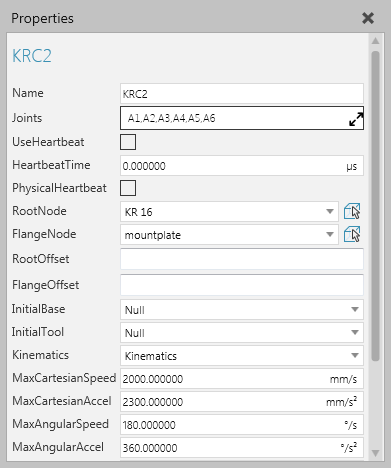
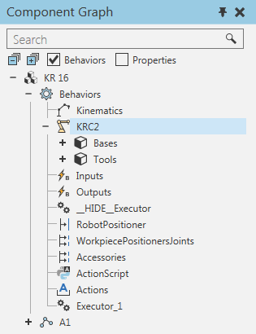

A Robot Controller allows you to configure and control a robot's mechanisms.

Base and tool frames of a Robot Controller are listed with the behavior in the Component Graph panel.

| Name | Description |
| Name | Defines the name of the controller. |
| Joints | Defines a list of joints defined in nodes used by the controller. |
| UseHeartbeat | Turns on/off the use of a pulse to drive events. |
| HeartbeatTime | Defines the time between each pulse (in seconds) if UseHeartbeat is enabled. |
| RootNode | Defines the link/node that acts as the base of the mechanical structure. |
| FlangeNode | If you are using an external axis system, defines the link/node used as a mounting plate for other kinematic structures. If you are using a track, defines the link/node used as the carriage. |
| RootOffset | Defines an offset from RootNode origin in the kinematics. Generally, this is used to start kinematics from the center of a node instead of its side. |
| FlangeOffset | Defines an offset from FlangeNode origin in order to properly mount other kinematic structures. |
| InitialBase | Defines the default base frame in the controller. |
| InitialTool | Defines the default tool frame in the controller. |
| Kinematics | Defines the kinematics solver (behavior) used to calculate and provide inverse kinematics related properties to the controller. |
| MaxCartesianSpeed | Defines the maximum Cartesian speed used for linear interpolation. |
| MaxCartesianAccel | Defines the maximum Cartesian acceleration used for linear interpolation. |
| MaxAngularSpeed | Defines the maximum angular speed used for linear interpolation. |
| MaxAngularAccel | Defines the maximum angular acceleration used for linear interpolation. |
| LagTime | Defines the time lag used for linear interpolation. |
| SettleTime | Defines the settling time used for linear interpolation. |
| OrientationInterpolationMode | Defines a mode for calculating the robot's orientation during linear motions in which the rotational values of the robot are based around one, two or three axes.
One Axis uses an axis with the smallest angle of rotation for the current tool center point. Two Axis uses one of the XYZ axes and its direction at the current tool center point. In this mode, the angle of rotation for the selected axis is applied first, and then other rotations are based around that axis. Three Axis interpolates either the yaw, pitch and roll (WPR) or Euler angles (ZYZ) of a position, and then calculates a sequence of rotations for the robot. |
| ConfigurationMode | Defines the mode for determining the robot's configuration during linear motion interpolation.
Fixed uses the robot's current configuration to reach a position. Follow frame tries to maintain the robot's current configuration, so small changes may occur to reach a position. Interpolate joint values means the robot uses a configuration based on a point-to-point interpolation of its joints to reach a position. |
| TrackWorldFrameMode | Defines the robot's World frame when the robot is mounted on a track.
TrackOrigin places the World frame at the track's origin. RobotWorldFrame retains the position of the World frame in the robot. |